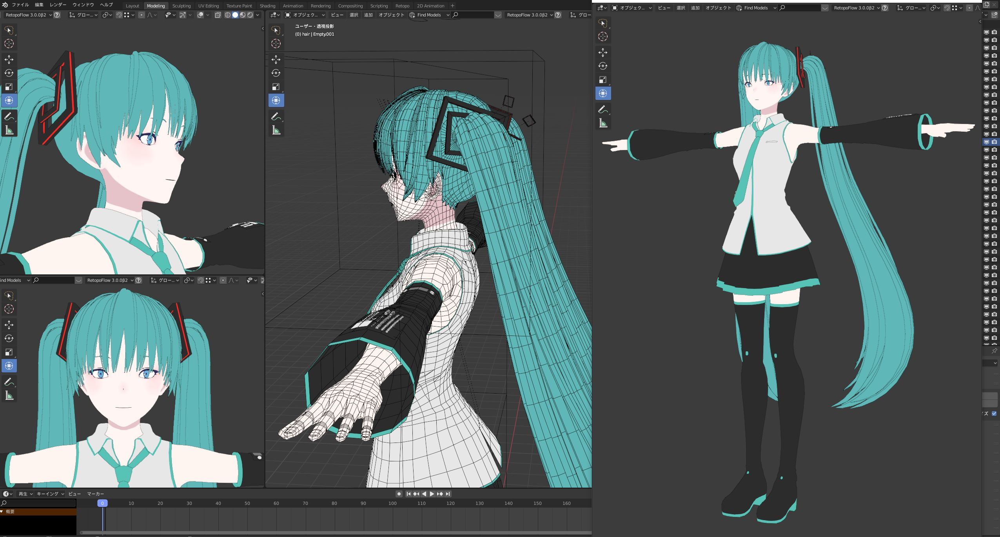

Blender探索
Blender 探索⌗
一些经验⌗
-
前置工作
编辑-偏好，设置语言为 English 或中文。快捷键映射，点击空格为搜索，而不是播放
-
如何创建 5 角环
shift+A 选择圆环，然后不要点击，左下角参数设置段数为 5
-
如何处理场景中的单个物品
使用/
-
如何查看当前物品位置，旋转参数？
右上角的几个圆圈下面的小三角展开
-
如何放大一个对象
s
-
如何在立方体的某个面中心放一个小立方体
tab 切换编辑模式，3 切换面，选中该面，shift+s 定位游标到这里。tab 切回，shift+a 创建立方体，s 缩小。
-
三个并排的立方体，模拟 1. 像天平一样，两边的立方体旋转，2. 3 个围绕一点转。3. 三个各自绕自己旋转
屏幕中间顶部有个局部和全局坐标系，右边那个就是参照点 1. 选围绕边界， 2. 选围绕游标，游标移到某处。 3. 旋转围绕物体原点
-
4 个角色围绕某点，两两对面，如何拉远所有角色和圆心的距离
同上，全选角色。选择局部坐标系，即参考自己的 transform，gx 拉远即可。可以看到他们都沿着自己世界的 x 轴移动，而不是真实的 x 轴
-
制作一个星球模型，星球上有很多环型山。即一个大球，上面有很多环
shift+a 创建球和环，环 s 缩小，点击屏幕中上吸附，吸附选项设置为面（项目中的元素、自动旋转），那么环就会自动旋转，吸附到球表面
3d 角色⌗

Read other posts